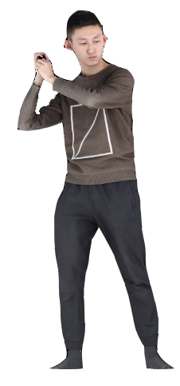
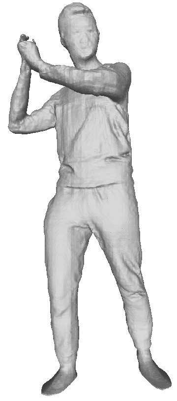
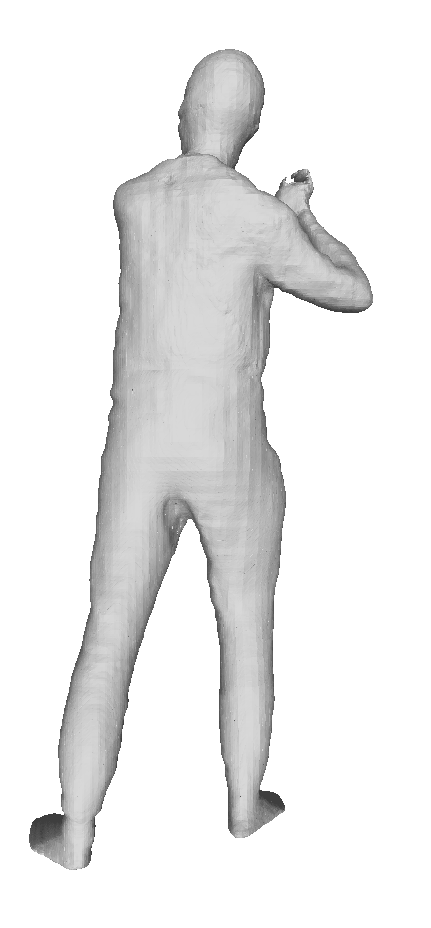
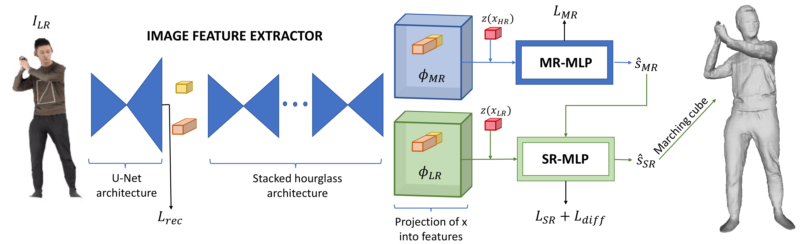
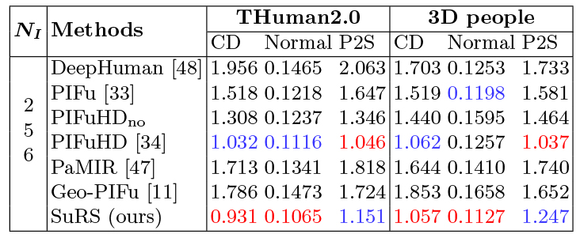
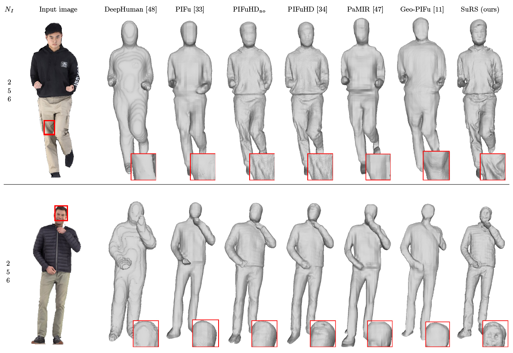
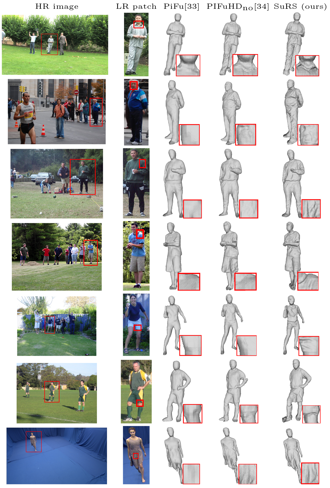

|
 256x256 input
|
 SuRS front reconstruction
|
 SuRS back reconstruction
|
Abstract
We propose a novel framework to reconstruct super-resolution human shape from a single low-resolution input image. The approach overcomes limitations of existing approaches that reconstruct 3D human shape from a single image, which require high-resolution images together with auxiliary data such as surface normal or a parametric model to reconstruct high-detail shape. The proposed framework represents the reconstructed shape with a high-detail implicit function. Analogous to the objective of 2D image super-resolution, the approach learns the mapping from a low-resolution shape to its high-resolution counterpart and it is applied to reconstruct 3D shape detail from low-resolution images. The approach is trained end-to-end employing a novel loss function which estimates the information lost between a low and high-resolution representation of the same 3D surface shape. Evaluation for single image reconstruction of clothed people demonstrates that our method achieves high-detail surface reconstruction from low-resolution (256x256) images without auxiliary data. Extensive experiments show that the proposed approach can estimate super-resolution human geometries with a significantly higher level of detail than that obtained with previous approaches when applied to low-resolution images.
SuRS Approach

Video
Paper
Citation
Marco Pesavento, Marco Volino, and Adrian Hilton, "Super-resolution 3D Human Shape from a Single Low-Resolution Image", IEEE European Conference on Computer Vision (ECCV), 2022.
Bibtex
TODO
}
Results
Quantitative Comparisons

Qualitative Comparisons

Real Data

References
- • DeepHuman: Z. Zheng et al., "DeepHuman: 3D Human Reconstruction from a Single Image", ICCV 2019.
- • PIFu: S. Saito et al., “PIFu: Pixel-Aligned Implicit Function for High-Resolution Clothed Human Digitization”, ICCV, 2019.
- • PIFuHD: S. Saito et al., "PIFuHD: Multi-Level Pixel-Aligned Implicit Function for High-Resolution 3D Human Digitization", CVPR, 2020..
- • Geo-PIFu: T. He et al., “Geo-PIFu: Geometry and Pixel Aligned Implicit Functions for Single-view Human Reconstruction”, NeurIPS, 2020.
- • PaMIR: Z. Zheng et al., "PaMIR: Parametric Model-Conditioned Implicit Representation for Image-based Human Reconstruction", TPAMI, 2021.
Acknowledgement
This research was supported by UKRI EPSRC Platform Grant EP/P022529/1.